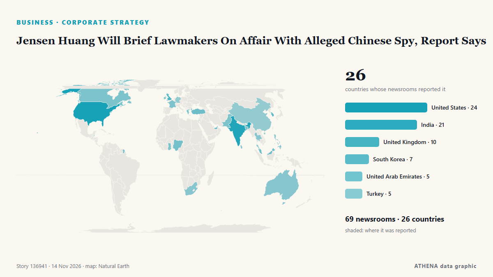

Επιχειρήσεις, Εταιρείες & Επενδύσεις
ΧορηγούμενοΠαρουσιάζεται από  Cybernetics and Artificial Intelligence Lab Welcome to the Cybernetics and Artificial Intelligence Laboratory, established at the Department of Business Administration of the National and Kapodistrian University of Athens. The lab is headed by Professor Dimitrios Thomakos. The lab aims to do research that can be published in top venues. Our research uses tools and methods of Artificial Intelligence, and lies in the following areas: - Forecasting - Decision making - Cyber security - Finance We are always looking forward to collaborating with exceptional students!
Cybernetics and Artificial Intelligence Lab Welcome to the Cybernetics and Artificial Intelligence Laboratory, established at the Department of Business Administration of the National and Kapodistrian University of Athens. The lab is headed by Professor Dimitrios Thomakos. The lab aims to do research that can be published in top venues. Our research uses tools and methods of Artificial Intelligence, and lies in the following areas: - Forecasting - Decision making - Cyber security - Finance We are always looking forward to collaborating with exceptional students!
Οι τίτλοι των ειδήσεων παρουσιάζονται στα αγγλικά, όπως δημοσιεύτηκαν.

Εταιρική στρατηγικήJensen Huang Will Brief Lawmakers On Affair With Alleged Chinese Spy, Report Says
President Donald Trump was briefed about a year ago about those intelligence findings, The New York Times reported. από CNBC World
| 1 Νοε | 33 |
|---|---|
| 2 Νοε | 116 |
| 3 Νοε | 111 |
| 4 Νοε | 111 |
| 5 Νοε | 111 |
| 6 Νοε | 77 |
| 7 Νοε | 33 |
| 8 Νοε | 58 |
| 9 Νοε | 108 |
| 10 Νοε | 121 |
| 11 Νοε | 96 |
| 12 Νοε | 92 |
| 13 Νοε | 45 |
| 14 Νοε | 0 |
Congress Summons Ex-Nvidia CEO Jensen Huang, Lutnick Over Chip Exports to China
House panels requested December interviews with Huang and Nvidia's top lawyer as scrutiny shifts to Commerce's oversight of chip exports. από Decrypt
US urges owners of 720,000 BMW vehicles to park outside over fire risks
BMW is still working on the recall fix and is aware of 10 fire incidents that may related to the issue. από The Independent
NCC recalls more than 23,000 Cherry and Omoda vehicles
The carmaker has filed a recall for certain Omoda and Tiggo brand vehicles built between 2022 and end-2023. από The Business Times
Hapag-Lloyd Q3 2026 profit rises to €860 million
Hamburg, Germany (Ports Europe) November 12, 2026 – Hapag-Lloyd raised its 2026 earnings outlook after Group profit rose to €860 million in the third quarter of 2026, from €138 million in the third… από Ports Europe
Samsung in talks to buy data center cooling firm Modine, Bloomberg News reports
NEW YORK: Samsung Electronics is in talks to acquire Modine Manufacturing, a US-listed maker of cooling systems for data centers, Bloomberg News reported on Thursday, citing people familiar with the… από New Straits Times
Cerebras raises its 2026 forecast and signs Microsoft as a cloud customer
Cerebras shares rose about 17% in after-hours trading on Thursday. από The Next Web
Kia to invest $2b in India to ramp up production
South Korean automaker Kia Corp. said Friday it plans to invest $2 billion in a second manufacturing plant in India to expand its production capacity in the growing automobile market. από Korea Herald
Renny Harlin Launches Harlin House Fellowship for Emerging European Filmmakers, Taps Colin Trevorrow, Tim Miller as Advisors
Finnish director Renny Harlin has set up Harlin House, a production company that will mentor emerging European directors and help them turn their projects into genre features with commercial reach. από Variety
Ukrainian-founded drone maker UForce raises $700 million at $6 billion valuation
The investment will help UForce expand production for Ukraine and supply allied countries with systems suited to modern warfare, the company said. από Kyiv Independent
Botswana Eyes De Beers Tech Dividend
President Duma Boko says Botswana’s planned increase in De Beers ownership is as much a technology play as a diamond investment BONGANI MALUNGA President Duma Boko has positioned Botswana’s proposed… από The Botswana Gazette
Vietnam's top leader receives Chairwoman of Russia’s Federaion Council
General Secretary of the Communist Party of Vietnam Central Committee and President To Lam received Chairwoman of the Federation Council of the Federal Assembly of Russian Valentina Matviyenko in… από Tuoi Tre News
Comedian Lucy Beaumont reveals herself as David Walliams whistleblower
"I feel like there’s a window of opportunity to change things" από NME
Amitabh Bachchan’s family hosted Sonia Gandhi’s pre-wedding ceremonies, memoir recalls
Sonia Gandhi has written about the role Amitabh Bachchan’s family played when she first came to India. από Gulf News
Vizag CII Summit: ReNew to invest ₹80,000 crore in green data centre, solar manufacturing in Andhra Pradesh
Investments include a ₹67,000-crore Green Hyperscale Data Centre in Anakapalli, ₹11,000-crore polysilicon and metallurgical silicon manufacturing facilities in Anakapalli and Nellore; and… από The Hindu
Burberry reports sales boost from trench coats and says turnaround ‘working’
The luxury fashion firm said revenues grew 6% to £1.1 billion in the six months to September 26. από Evening Standard (London)
Poste Italiane posts best-ever profit for first nine months of year
(ANSA) - ROME, 12 NOV - Poste Italiane said Thursday that it made an adjusted net profit of 1.88 billion euros in the first nine months of this year, having generated income of 629 million euros in… από ANSA English
Canadian co signs MoU with Mari Energies
ISLAMABAD: Ivanhoe Mines signed a memorandum of understanding with Pakistan’s Mari Energies on Thursday, the Canadian company’s chairman Robert Friedland said on the sidelines of the Pakistan… από Business Recorder
ICTSI net income rises 20% in January-September 2026
Manila, Philippines (Ports Europe) November 13, 2026 – ICTSI’s net income rose 20% to €808 million in January-September 2026, but two newly acquired terminals drove most of the 13% rise in container… από Ports Europe
Donald Trump Jr. exits advisory role at prediction market Kalshi
Donald Trump Jr. is no longer a paid adviser for Kalshi, the prediction market company said Thursday. από The Canadian Press (via CityNews)
Nebius signs $12bn in deals for Q3, all deals reportedly cover its capex
Company also notes delays to Microsoft data center project. από Data Center Dynamics
Yogi Adityanath: Bulldozers now UP brand, make them here
Even after mounting criticism, including a Supreme Court judgement, Uttar Pradesh Chief Minister Yogi Adityanath on Thursday described bulldozers as a brand associated with the state. από Deccan Herald
Alina Habba Mildon loses $50M contract after Trump criticism
Alina Habba Mildon, a former attorney for President Trump, has reportedly been fired from a multimillion-dollar contract with a family company tied to a billionaire banker who recently received a… από The Hill
Finland to allocate over EUR 37M for Ukraine’s reconstruction
Finland’s Ministry for Foreign Affairs is allocating €37.3 million to support Ukraine’s reconstruction under the Strategic Investment and Support for Ukraine (SISU) program. από Ukrinform (English)
EU explores deeper Syria partnership, flags concern over Russia role
BRUSSELS/DAMASCUS, Nov 11 - The European Union is weighing a broad upgrade in ties with Syria, including security sector reform, investment and a revival of a long-frozen trade accord, according to… από The Straits Times
Alex Karp says he's a lifelong Democrat — and Palantir's products are 'essentially progressive'
Palantir CEO Alex Karp told Politico that he's a lifelong Democrat, and that President Donald Trump mishandled immigration. από Business Insider
Mohamed Alabbar teases reveal of new ‘big tower’ in Dubai
The founder and managing director of Emaar Properties said the tower tender will be "held back" until the regional disruption "cools down" από Arabian Business
Thessaloniki Tax Fraud Case: One Defendant Remanded in Custody
Four defendants have been released under restrictive conditions following questioning, while prosecutors allege that a criminal network used shell companies and front managers to defraud the Greek… από To Vima (English)
Air India’s Losses Are Still Bigger Than Singapore Airlines’ Profit
Singapore Airlines’ India bet is costly. από Skift
Petrobras Pays Shareholders US$2.7 Billion
Brazil's state oil giant Petrobras will pay shareholders R$15.3 billion (about US$2.7 billion) for the third quarter, 12% below August. από The Rio Times
Hombolo project set to be investment hub
DODOMA: THE government plans to transform Dodoma into a modern, internationally competitive city and a major hub for economic activities, tourism and investment through the proposed Hombolo Smart… από Daily News
Asian stocks fragile, Nvidia plummets as board to decide CEO's fate
Analysts believe the Nvidia board will not oust Jensen Huang until they have an all-star successor who is a known entity in the tech sector. από Free Malaysia Today
IBM ends US visa, green card sponsorship for most consulting roles
IBM's move affects most roles in its consulting division, which employs over 150,000 people, as the Trump administration tightens scrutiny of foreign hiring and H-1B visa sponsorship. από Business Standard
HELLENiQ Energy plans investment of over €1bn in Romania by 2030
HELLENiQ ENERGY Holdings plans to invest more than €1 billion in Romania by 2030, expanding its renewable energy and battery storage operations as part of its strategy to strengthen its presence… από Cyprus Mail